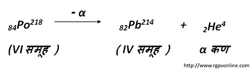
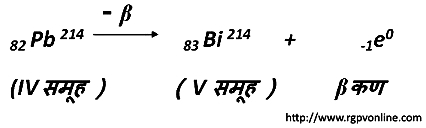

Q.9 : समूह विस्थापन नियम क्या है? उदाहरण सहित समझाइए।
सोडी (साड़ी ) का समूह विस्थापन नियम बताइए?
उत्तर - सन् 1931 में सोडी और फजन्स ने α-कण और β -कण उत्सर्जन के प्रभाव को दर्शाने के लिए एक नियम दिया जिसे समूह विस्थापन नियम कहते हैं। इस नियम के अनुसार, "जब कोई रेडियोऐक्टिव तत्व एक α -कण उत्सर्जित करता है तो तत्व आवर्त सारणी में अपने मूल स्थान से दो समूह बायीं ओर विस्थापित हो जाता है तथा यदि β -कण उत्सर्जित करता है। तो तत्व आवर्त सारणी में एक समूह दायीं ओर विस्थापित हो जाता है।"
दूसरे शब्दों में, नाभिक से एक α-कण के उत्सर्जन से बने हुये नये परमाणु का द्रव्यमान 4 इकाई कम होगा तथा उसकी परमाणु संख्या मूल परमाणु की अपेक्षा 2 कम होगी। इस प्रकार परमाणु संख्या 2 कम होने के कारण नया तत्व आवर्त सारणी में 2 स्थान बायीं ओर स्थान ग्रहण करेगा। एक β -कण उत्सर्जन से बने हुये नये परमाणु के नाभिक में एक धनात्मक आवेश बढ़ जायेगा तथा उसकी परमाणु संख्या मूल तत्व की परमाणु संख्या से एक अधिक होगी। लेकिन परमाणु द्रव्यमान में कोई अंतर नहीं आयेगा। इससे नया तत्व आवर्त सारणी में मूल तत्व की तुलना में एक स्थान दायीं ओर स्थान ग्रहण करेगा। उदाहरण के लिए, पोलोनियम (84 Po218) आवर्त सारणी के VI समूह में है। यह α-कण उत्सर्जित कर रेडियोऐक्टिव लेड (82 Pb214) में परिवर्तित हो जाता है जो IV समूह में है अर्थात् मूल तत्व Po से दो समूह बायीं ओर चला जाता है।

यहाँ प्राप्त लेड एक β -कण उत्सर्जित करके बिस्मथ 83 Bi214 में परिवर्तित हो जाता है जो कि आवर्त सारणी के V समूह में है अर्थात् एक समूह दायीं ओर खिसक जाता है।

संतति (उत्पाद) तत्व, 85 Bi214 (बिस्मथ) का आइसोटोप है। β -उत्सर्जन से समभारिक (isobars) तत्व बनते हैं। अतः इस नियम से निम्नलिखित निष्कर्ष निकलते हैं -
(i) किसी नाभिक से एक α -कण तथा दो β -कण उत्सर्जन से समस्थानिक (isotope) बनते हैं।
(ii) किसी नाभिक से β -कण उत्सर्जन के फलस्वरूप समभारिक बनते हैं।